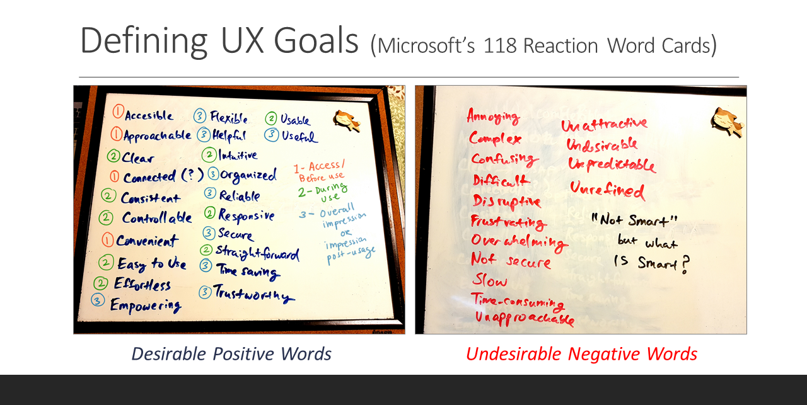
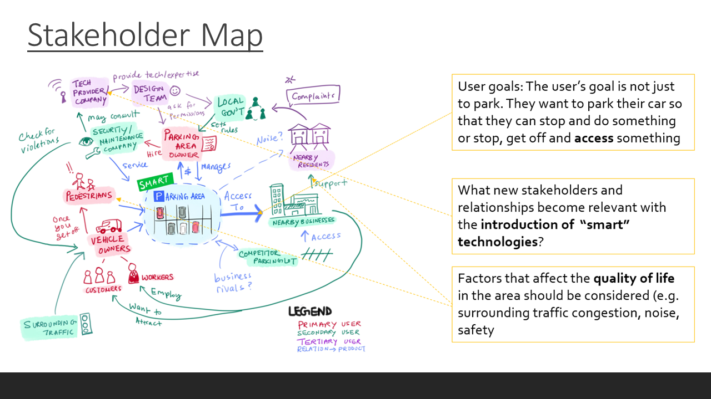
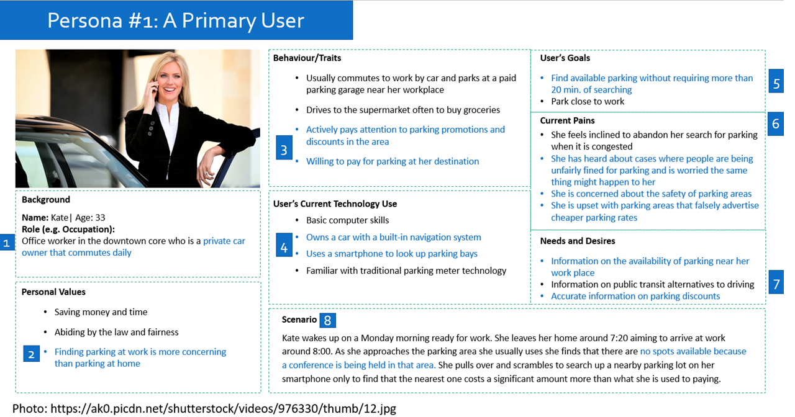
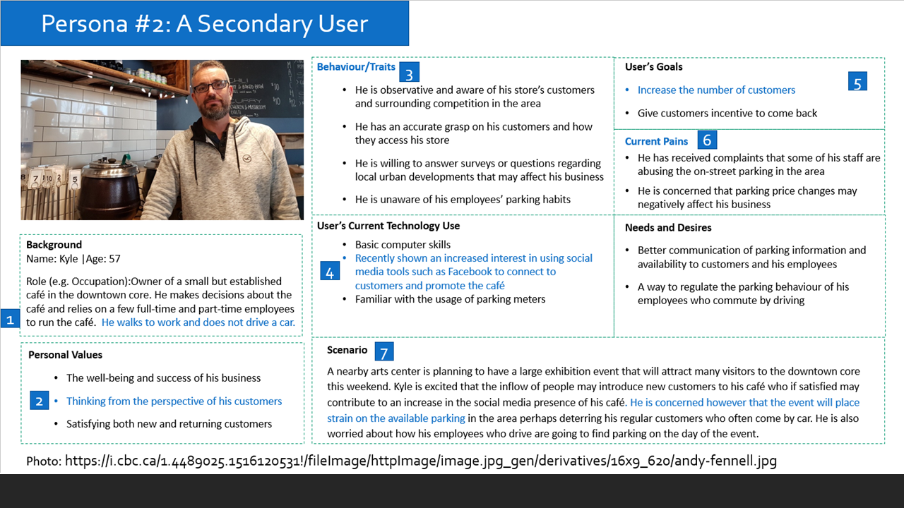
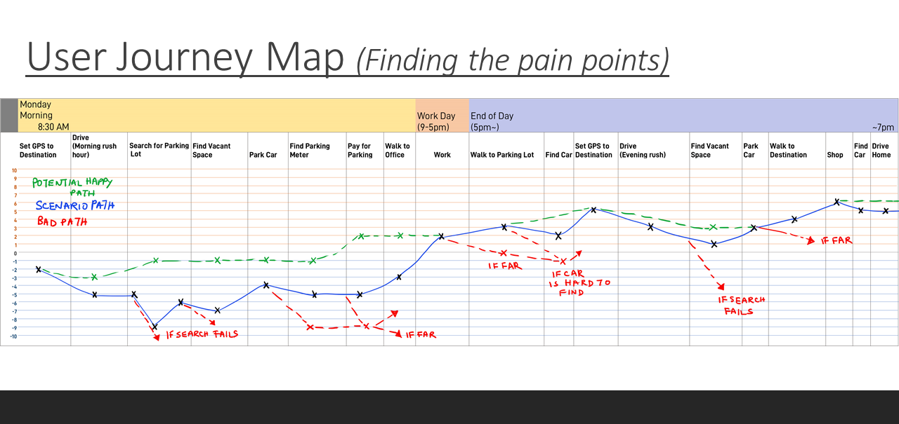
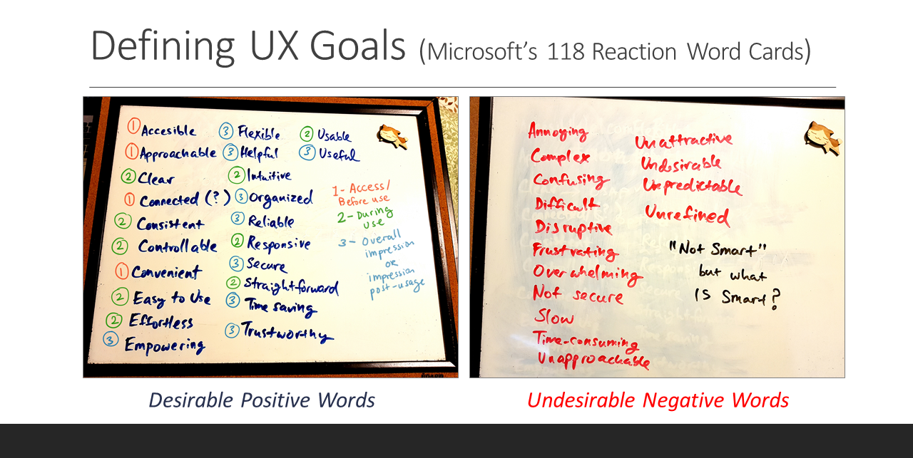
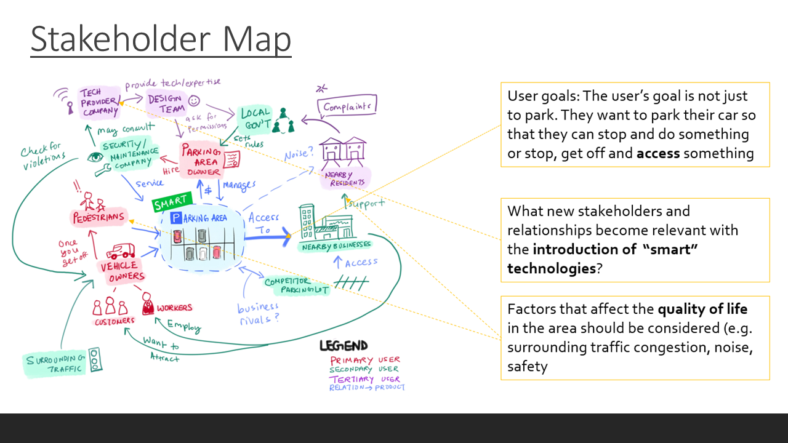
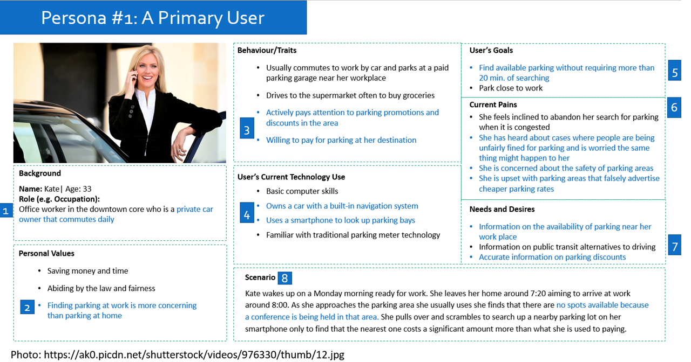
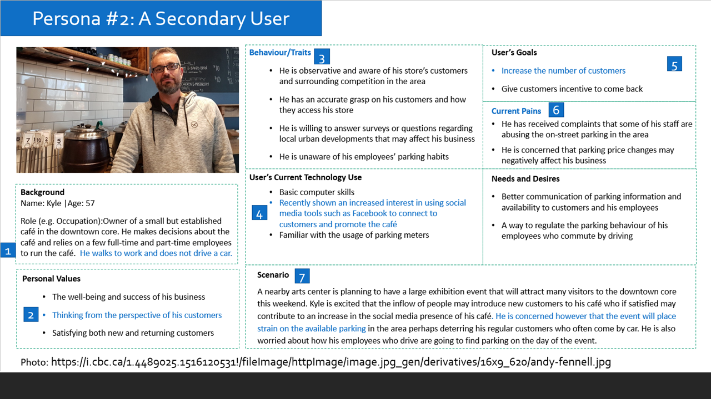
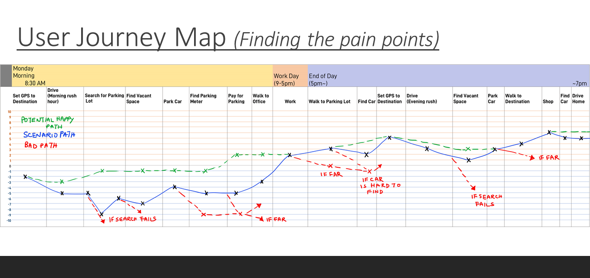

Home > User Research Projects >
Methods Used:
Personas
User Journey Map
Card Sorting
Interviews
10-second Test
Heuristic Evaluation
Value Opportunity Analysis
    
Click here to see the full portfolio
Project Overview
Dates: January - April 2018
Description: The availability and management of parking spaces plays a large role in accommodating traffic in large cities. In 2011 IBM performed a Global Parking Survey in 20 of the world’s busiest urban cities including New Delhi, Beijing, Paris and Toronto. (“IBM Global Parking Survey: Drivers Share Worldwide Parking Woes”, 2011) Based on other reports and its own findings, it states that: 30% of urban traffic is made up of people looking for parking More than 50% of respondents reported having abandoned their search for parking. To address this problem, there has been increased interest in deploying smart parking systems that provide parking availability information, adaptive pricing schemes, parking reservation services or e-payment for parking. (Smart Cities Implementing a Smart Parking Eco-System, 2016).
This project, submitted for a course on User Centered Design Methods, aims to use various primary and secondary user-centered design methods to explore the user experience and usability associated with parking related technologies. This includes existing signs, parking meters and software products that help users locate empty parking spaces, pay for parking or manage parking areas.
Description: The availability and management of parking spaces plays a large role in accommodating traffic in large cities. In 2011 IBM performed a Global Parking Survey in 20 of the world’s busiest urban cities including New Delhi, Beijing, Paris and Toronto. (“IBM Global Parking Survey: Drivers Share Worldwide Parking Woes”, 2011) Based on other reports and its own findings, it states that: 30% of urban traffic is made up of people looking for parking More than 50% of respondents reported having abandoned their search for parking. To address this problem, there has been increased interest in deploying smart parking systems that provide parking availability information, adaptive pricing schemes, parking reservation services or e-payment for parking. (Smart Cities Implementing a Smart Parking Eco-System, 2016).
This project, submitted for a course on User Centered Design Methods, aims to use various primary and secondary user-centered design methods to explore the user experience and usability associated with parking related technologies. This includes existing signs, parking meters and software products that help users locate empty parking spaces, pay for parking or manage parking areas.
Methods Used:
Work Samples
e.g. Personas, User Journey Map, etc...    
{kind=link}
{kind=link}
{kind=link}
{kind=link}
{kind=link}
Click here to see the full portfolio
Banner Image Credits
Modified from: http://www.raisingedmonton.com/wp-content/uploads/2017/12/Parking-Lot-Carseat-Advice.jpg